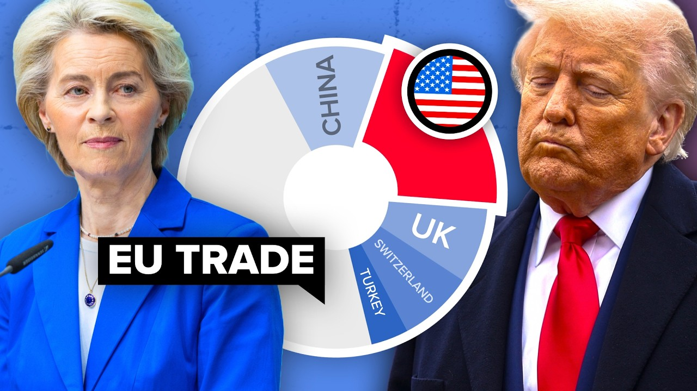

来B站一起耍【Global每日英语简报】
【欧洲到底有多需要与美国的贸易？】
Summary: This video examines the EU's trade reliance on the US, potential alternatives, and the benefits of reducing internal trade barriers.
摘要： 本视频探讨了欧盟对美国的贸易依赖、可能的替代方案以及减少内部贸易壁垒的好处。

⏱️ Estimated Reading Time: 14 min
This video is brought to you by Brilliant.
本视频由Brilliant赞助播出。
Since making his grand return to the Oval Office, US President Donald Trump has been turning the tariff switch on and off, shaking up European economies and threatening to essentially collapse the 1.6 trillion euro transatlantic trade relationship.
自高调重返白宫以来，美国总统唐纳德·特朗普不断调整关税政策，动摇欧洲经济，并可能彻底瓦解价值1.6万亿欧元的跨大西洋贸易关系。
As such, the EU has stepped up to cast itself as the heavyweight liberal trade block that's open for business with the European Commission president claiming all Trump that many countries were now reaching out to Brussels for trade deals to offset Trump related disruption.
因此，欧盟将自己定位为重量级自由贸易集团，欧盟委员会主席声称许多国家正寻求与布鲁塞尔达成贸易协议，以抵消特朗普带来的贸易动荡。
So, in this video, we're going to look at the EU's pre-existing network of trade agreements, whether this network could be expanded to replace the US, and why the most effective solution might be to reduce internal barriers within the EU itself.
本视频将探讨欧盟现有的贸易协定网络，该网络能否扩展以替代美国，以及为何最有效的解决方案可能是减少欧盟内部的贸易壁垒。
We've just published a new issue of our official magazine, too.
我们还刚刚发布了新一期官方杂志。
Long, which runs through the world's most influential people and how they wield their power.
《Long》杂志梳理了全球最具影响力的人物及其权力运作方式。
From Elon Musk's takeover to the power of Mle or whether Jerome Powell can resist Trump.
从埃隆·马斯克的收购到Mle的影响力，再到杰罗姆·鲍威尔能否抵抗特朗普。
Read more by clicking the link in the description.
点击描述中的链接阅读更多内容。
First, let's start with some context.
首先，让我们了解一些背景。
The US is the EU's largest export partner, accounting for around 20.6% of the block's total goods exports in 2024, with the most exported goods being pharmaceuticals and cars.
美国是欧盟最大的出口伙伴，2024年占欧盟商品出口总额的20.6%，主要出口商品为药品和汽车。
Trump has slapped a 10% tariff across the board and a massive 25% on motor vehicles, which has seriously hit Europe's big manufacturing economies, and could cause GDP to shrink by 1.6% in Germany and 0.8% in France, the block's two largest economies.
特朗普全面征收10%关税，并对汽车加征25%关税，严重冲击欧洲制造业大国，可能导致德国GDP萎缩1.6%，法国萎缩0.8%。
What's more, it could get even worse.
更糟的是，情况可能进一步恶化。
In 2 months, the US could reinstate its 20% tariffs on all EU imports, meaning less demand for these goods, which makes up around 2% of the EU's GDP.
两个月内，美国可能对欧盟所有进口商品恢复20%关税，导致需求下降，这些商品约占欧盟GDP的2%。
According to a worst case scenario report by the Keel Institute, if the US imposed 25% tariffs across the board and the EU retaliated, European exports could drop by about 17.5%.
基尔研究所的最坏情况报告显示，若美国全面征收25%关税且欧盟报复，欧洲出口可能下降约17.5%。
Still, with trade deals with some 74 international partners, the European Union has one of the largest networks of trade agreements in the world.
尽管如此，欧盟与约74个国际伙伴签署了贸易协定，拥有全球最大的贸易协定网络之一。
In 2023, this network facilitated 7.6 trillion euros in trade, which is 16.1% of the global trade share, more than the bilateral trade that the EU does with both the US and China by a good margin.
2023年，该网络促成了7.6万亿欧元贸易额，占全球贸易份额的16.1%，远超欧盟与美中的双边贸易总和。
So the big question here is if this rupture in the transatlantic trading relationship persists, can the EU use this network or even add to it to offset any economic harm?
关键问题是：若跨大西洋贸易关系持续破裂，欧盟能否利用或扩展该网络以抵消经济损失？
Well, unfortunately, none of the countries that the EU already has trade deals with can really replace the US in this respect, largely because none of them can match the demand that the US creates.
遗憾的是，欧盟现有贸易伙伴均无法替代美国，因其无法匹敌美国创造的需求。
Not only is the US an exceptionally wealthy country, but it also runs persistent trade deficits, meaning American consumers buy lots of European exports without Europeans buying equivalent amounts of American stuff.
美国不仅极其富裕，还长期存在贸易逆差，意味着美国消费者大量购买欧洲商品，而欧洲人并未等量购买美国商品。
The EU has also somewhat lost its trade mojo recently with prospective deals with Australia, India, Indonesia, and Merkasaur all stalling despite the massive potential.
欧盟近期贸易势头减弱，与澳大利亚、印度、印尼和南方共同市场的潜在协议均停滞，尽管潜力巨大。
The main problem here is that it's really not an easy task to get 27 individual countries to agree on something and the EU is short on political unity at the moment.
主要问题在于，让27个国家达成共识非常困难，且欧盟目前缺乏政治团结。
Take the Merkasur deal for instance.
以南方共同市场协议为例。
The South American block comprising Argentina, Bolivia, Brazil, Paraguay, and Uruguay.
该南美集团包括阿根廷、玻利维亚、巴西、巴拉圭和乌拉圭。
The deal, which would create one of the world's largest free trade zones, has been in the works for 25 years and has still not been clenched, exposing numerous rifts within the EU.
这项将创建全球最大自贸区之一的协议已谈判25年仍未敲定，暴露出欧盟内部诸多分歧。
Germany, for example, is a strong supporter of the deal and wants to see it concluded quickly as it would open up Merkasur's protectionist market to German cars.
例如德国强烈支持该协议，希望尽快达成，因其将向德国汽车开放南方共同市场的保护主义市场。
On the other hand, France has held up the deal's progress due to staunch resistance from France's powerful farmers lobby, which fears being undercut by a flood of agricultural goods from big South American producers.
而法国因强大农民游说团体的坚决反对阻碍协议进展，他们担心被南美大生产商的农产品冲击。
With that being said, Trump's tariff wars have apparently created a new sense of momentum.
尽管如此，特朗普的关税战显然创造了新动力。
European Commission President Ursla Fondonder Lion who said earlier in April that amid Trump's trade war, countries are lining up to work with the EU called to strike a free trade agreement with India this year, launched or relaunched talks with the Philippines, Malaysia, Thailand, the United Arab Emirates and others and wrapped up talks on the Merkasur deal.
欧盟委员会主席乌尔苏拉·冯德莱恩4月表示，在特朗普贸易战中，多国排队与欧盟合作，呼吁今年与印度达成自贸协定，重启与菲律宾、马来西亚、泰国、阿联酋等国的谈判，并完成南方共同市场协议谈判。
In fact, some countries previously skeptical of the Merkasur deal have shifted towards the prodeal camp with the French trade minister telling Politico that Trump's trade war is a wake-up call on trade agreements.
事实上，一些曾对南方共同市场协议持怀疑态度的国家转向支持阵营，法国贸易部长向Politico表示，特朗普的贸易战是对贸易协定的警醒。
The odds of these deals happening are clearly rising and this will probably be good for European consumers who will get access to cheaper foreign goods.
这些协议达成的几率明显上升，对欧洲消费者有利，他们将获得更便宜的外国商品。
However, it might not be so good for European businesses and exporters because again, no other market can really provide as much demand as the US can.
但对欧洲企业和出口商可能不利，因为其他市场无法提供美国那样的需求。
That is except for the EU itself.
除了欧盟自身。
Like America, the EU has a wealthy middle class that wants to spend lots of cash.
与美国类似，欧盟拥有富裕的中产阶级，消费意愿强烈。
But it's surprisingly hard for European businesses to reach these consumers because there are still lots of internal barriers to trade within the EU despite the aspirations of the single market.
但欧洲企业难以触达这些消费者，因欧盟内部仍存在大量贸易壁垒，尽管有单一市场的愿景。
When the European single market was originally conceived, the basic idea was that one big open market with free movement of goods, services, people, and capital would be better than lots of smaller markets within national economies.
欧洲单一市场最初设想是：一个商品、服务、人员和资本自由流动的大开放市场，优于各国经济中的多个小市场。
A single market would be better for consumers because there would be more competition and more choice, but also for businesses because it would be easier to do intracontinental trade and create a bigger consumer market to sell to.
单一市场对消费者更有利，因竞争和选择更多；对企业也更有利，因更易开展洲内贸易并创造更大的消费者市场。
And yet so far the single market has failed to live up to its lofty aspirations and progress has really stagnated since the Euro zone crisis, which has significantly weakened intrauropean trade.
但迄今为止，单一市场未能实现其崇高愿景，自欧元区危机以来进展停滞，严重削弱了欧洲内部贸易。
According to a 2020 study by the IMF, Europe's internal barriers are equivalent to a tariff of 45% for manufacturing and 110% for services.
IMF 2020年研究显示，欧洲内部壁垒相当于制造业45%和服务业110%的关税。
This is far higher than the equivalent internal barriers between American states and explains why trade across EU countries is less than half the level of trade across US states.
这远高于美国州际壁垒，解释了为何欧盟国家间贸易不及美国州际贸易的一半。
So why has the EU been so bad at essentially trading with itself?
为何欧盟在内部贸易上表现如此糟糕？
Well, it's in large part because the EU's limited political attention has long been focused on negotiating trade deals with other countries rather than bringing down internal trade barriers.
主要原因是欧盟有限的政治注意力长期集中于与他国谈判贸易协定，而非降低内部贸易壁垒。
Paradoxically, the EU's enthusiasm for free trade deals with other countries has sort of exacerbated this problem because it's made European businesses increasingly reliant on trade with non-EU countries rather than with other EU member states.
矛盾的是，欧盟对他国自贸协定的热情加剧了该问题，因这使欧洲企业日益依赖与非欧盟国家的贸易，而非欧盟成员国间贸易。
It's also because national governments are increasingly reluctant to seed power to Brussels and national regulations aren't well harmonized, which makes doing business in another European country surprisingly difficult.
还因各国政府越来越不愿向布鲁塞尔让权，且国家法规未充分协调，导致在另一欧洲国家经商异常困难。
More recently, anxieties about immigration have put pressure on freedom of movement, one of the central tenets of the single market, and more and more EU countries have started imposing restrictions on crossber travel.
最近，移民担忧对单一市场核心原则之一的自由流动施压，越来越多欧盟国家开始限制跨境旅行。
These restrictions are supposed to be a temporary last resort measure reserved for exceptional situations.
这些限制本应是保留给特殊情况的临时最后手段。
But quite a few EU countries have now essentially imposed them permanently and just renew them periodically.
但不少欧盟国家现已基本永久实施，仅定期更新。
All in all, the point we're trying to make is that the best way to offset any transatlantic trade rupture would be to focus on removing internal barriers within the EU, which could unlock new demand for European businesses.
总之，我们认为抵消跨大西洋贸易破裂的最佳方式是聚焦消除欧盟内部壁垒，从而为欧洲企业释放新需求。
At TLDDR News, we're always trying to help you learn more about the world around you.
在TLDDR News，我们始终致力于帮助您了解更多世界动态。
Luckily for us, our sponsor this week, Brilliant, shares this same commitment.
幸运的是，本周赞助商Brilliant与我们志同道合。
Their thousands of interactive lessons in maths, science, programming, data analysis, and AI are designed to help you learn by actually doing rather than asking you to mindlessly memorize stuff.
他们提供数学、科学、编程、数据分析和AI的数千门互动课程，旨在通过实践而非死记硬背帮助学习。
For instance, each lesson is filled with hands-on problem solving that lets you play with concepts, a method proven to be six times more effective than watching lecture videos.
例如，每节课都充满实践性问题解决，让您探索概念，该方法被证明比观看讲座视频有效六倍。
This helps you build your critical thinking skills and become a better thinker.
这有助于培养批判性思维，成为更好的思考者。
Brilliant's newly updated maths courses help you establish a strong foundation in algebra.
Brilliant新更新的数学课程帮助建立扎实的代数基础。
It then helps you build on this, teaching you how to conquer calculus, all while maintaining an emphasis on problem solving and reasoning.
进而帮助在此基础上攻克微积分，始终强调问题解决和推理。
The thing I like best about this though is that their mathematical courses help you develop your mathematical intuition and fluency skills that you can use in the real world.
我最欣赏的是，他们的数学课程培养可在现实世界运用的数学直觉和流利技能。
As we've told you before, data skills are absolutely necessary for navigating the modern world, and Brilliant is one of the best ways to get them.
如我们之前所说，数据技能对应对现代世界至关重要，而Brilliant是获取这些技能的最佳途径之一。
To try Brilliant for free, visit brilliant.org. /tlddr or click the QR code on screen or you can click the link in the description.
免费试用Brilliant，请访问brilliant.org/tlddr，或扫描屏幕二维码，或点击描述中的链接。
You'll also get 20% off an annual premium subscription.
年度高级订阅还可享8折优惠。